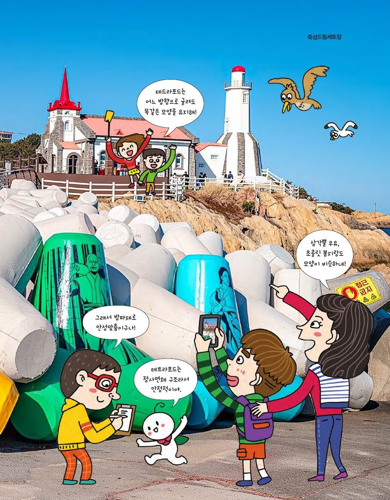

방파제의 테트라포드는 정사면체를 변형한 구조물. 어느 방향으로 굴려도 모양이 같고 무게중심이 낮아 파도에도 끄떡없어요. 정사면체를 잘라 펼쳐 봅시다.
★ 이 단원에서는 — 정사면체의 표면을 잘라 펼친 다양한 전개도를 만들 수 있다.

📍 죽성드림세트장정사면체의 모서리 6개 중 3개를 잘라 펼쳐요. 왼쪽 그림에서 자를 모서리를 눌러 고르세요(드래그하면 돌아가요). 오른쪽에 펼친 전개도가 나타나요.
자른 모서리 3개가 한 꼭짓점에 모이면 큰 정삼각형 모양, 3개가 한 줄로 이어지면 평행사변형 모양. 모서리로만 자르면 이 2가지뿐이에요. (3개가 삼각형을 이루면 펼쳐지지 않아요!)
전개도는 꼭 모서리를 따라 자를 필요가 없어요. 삼각형 전개도의 양 끝을 잘라 옮겨 붙이면 직사각형이 돼요. 삼각뿔 우유팩·과자 봉지가 이렇게 만들어져요(자투리가 없어 경제적!).
직사각형 전개도에서 자른 선은 정사면체의 모서리가 아닌 표면 위를 지나요 — 한 꼭짓점에서 맞은편 모서리의 중점까지. 평행사변형 전개도도 끝의 작은 삼각형을 떼어 반대편에 붙이면 직사각형이 돼요.
비밀 메시지를 쓰면 전개도의 네 면에 흩어져 들어가요. 접어야만 읽을 수 있는 편지! 인쇄해서 잘라 접어 보세요.
점선은 접는 선, 실선은 자르는 선. 접으면 글자가 모여 메시지가 돼요.
모서리가 아닌 표면을 자르면 삼각형, 사각형, 오각형… 여러 모양의 전개도를 얻을 수 있어요. 삼각형 전개도에서 자를 선을 직접 그어 보세요: 큰 삼각형의 꼭짓점에서 출발해 가운데 삼각형의 변까지 잇는 선 3개를 긋고 '펼쳐 보기'.
실생활에서 쓰일 입체도형을 골라 나만의 전개도를 만들고 장점을 탐구해 보세요.